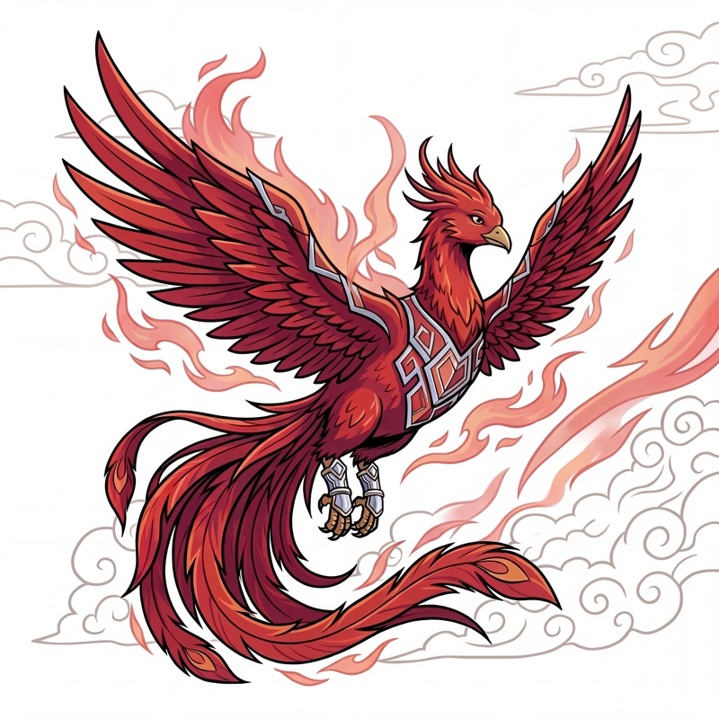
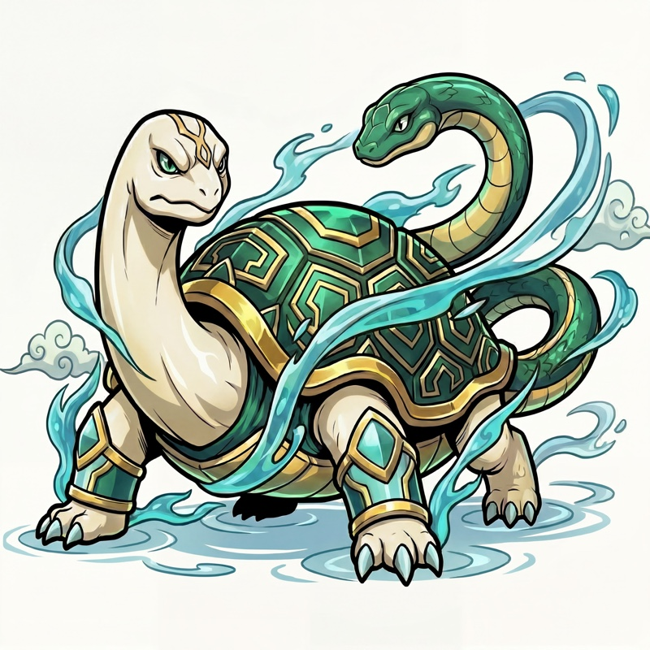

四神診断
－組織タイプ診断結果－

あなたの利き神タイプ
朱雀
朱雀タイプ ―
ヒューマンドライブ型組織
- 共創
- 共鳴
- 関係性
- 文化
人の想いに火をつけ、関係性で人を束ねる組織。その熱量が続ける仕組みと結びついたとき、一度きりの成果が、続く力に変わります。
御社の四神構成
4つの力のうち、
最も強く表れているのは朱雀です。
-
雀- 朱雀共創の力利き神40%
-
龍- 青龍革新の力30%
-
虎- 白虎成果の力18%
-
武- 玄武構造の力12%
朱雀タイプとは
こんな組織です
朱雀型組織は、人の熱量と共感を原動力に動く組織です。感情・尊厳・関係性を大切にしながら、対話と物語で人を巻き込み、チームを一体化させていく。その温かさと巻き込み力が、文化づくり・顧客関係・組織の結束の場面で大きな力になります。
- 人を大切にする文化が、組織への信頼と熱量を生み出す
- 共感と関係性を起点に、人が自然と動く組織をつくれる
朱雀の具体的な行動
- 011on1や対話の場を定期的に設ける関係性を深める継続的な接点
- 02社内イベントやワークショップで空気を温める一体感を生む場のデザイン
- 03顧客コミュニティやファンづくりに力を入れる関係性を競争力に変える
- 04部署横断の調整や合意形成を担うつなぐ力が組織を動かす
- 05ストーリーや理念を発信して組織を動かす共鳴が推進力になる
朱雀の強みと弱み
強み①人を動かす共感力と熱量
- 感情・物語・関係性で人を本気にさせられる
- チームの一体感と熱量をつくり出せる
- 顧客や社内を「ファン」に変えられる
強み②文化と関係性を競争力にできる
- 離職を防ぎ、人が長く活躍できる環境をつくれる
- 部署横断の調整や合意形成を自然に担える
- ストーリーと理念で組織を動かせる
朱雀の強みは、出すぎると
弱みに変わります。
弱み①空気や関係性で意思決定してしまう
- 重要な判断が、場の雰囲気や共感で決まりやすい
- 筋の通った厳しい戦略が詰まりにくい
弱み②配慮しすぎて決断が遅れる
- 関係を壊したくなくて、締めるべき場面で甘くなる
- 頑張りや姿勢を評価しすぎ、成果基準が曖昧になる
いくつ、心当たりがありましたか。
このまま、朱雀の温かさだけで
進み続けると、どうなるか。
仲は良い。
けれど誰も厳しいことを言わなくなる。
そしてある日、
成果を出せる人から
静かに離れていきます。
朱雀型の会社が壁に当たるのは、
対立が起きたときではありません。
一番、
居心地が良いときです。
利き神を知るだけでは、
組織は変わりません。
利き神の強みは理解した。
では次に何が必要か。
本当に重要なのは、影神の理解です。
御社には、まだ十分に
使えていない力があります。
四神診断では、
4つの力のうち最も少ない特性を
「影神（シャドウ）」と呼びます。
影神は、単なる弱点ではありません。
今の強みだけでは越えられない壁を
越えるために必要な力です。
今回の診断結果｜影神（第4位）
── 玄武
朱雀の想いを、続く仕組みに変える存在

朱雀型組織の強みは、人の想いに火をつけ、共感を通じて組織に一体感を生み出せることです。一方で、その力が強く出るほど ──
- 熱量はあるのに、続く仕組みにならない
- 人に依存し、担当が変わると回らない
- 良い取り組みが、属人的なまま消えていく
そこで必要になるのが、今回の影神である玄武です。玄武は、朱雀の個性を消す力ではありません。
次々に生まれる成果や動きを「続けられる形」に変え、再現性ある仕組みとして積み上げる力です。
朱雀型組織が次に成長するためには、玄武を取り込む必要があります。
では、朱雀の強みを失わずに、どうやって玄武を取り込めばよいのでしょうか。
LINEで受け取る
このページで分かるのは、
御社の「現状」までです。
今回の診断で分かるのは、御社の組織がどの方向に偏っているか、どこに強みがあり、どの力が不足しやすいか──その「現状の構造」です。
玄武が入ると、御社の景色はこう変わります──
一度きりの成果が、再現できる仕組みになる。その道筋の描き方が、この先です。
ここから先で、次のことが分かります。
- 朱雀の強みを失わずに、玄武を取り込む順番
- 朱雀40%・玄武12%という構成比が示す、御社の最初の一手
- 4つの力が噛み合う「完全組織」とは何か
これらは、LINE登録後
すぐにお読みいただけます。
御社のタイプ（朱雀 × 玄武）に
応じた内容です。
LINEで受け取る
登録は無料です。
いつでも解除できます
© B.essence. All Rights Reserved.